As part of the course’s project of Digital System Hardware - Software Integration Spring 2026 at EURECOM by professor Renaud Pacalet.
It already exists computers which can perform not only a specific task, but many different task that can be activities like processing audio, connecting to the internet, displaying in the monitor among many others. This type of computers are known as general-purpose processors, but what about implementing a processor for a specific task? is it worth it? Well, it depends on the needs of the designer, but if they look for processing heavy workload in a short time, then it may be a nice option not to implement that activity in a general-purpose processor. That is why, accelerators exist and they speed up the process of complex activities to help to the general-purpose processor. However, don't get me wrong, general-purpose processor in many times they are capable to handle such complex activities and more feasible in some cases, but they don't excel as an accelerator since it was designed to handle many other activities at the same time, not only just one. A very common example is that crypto systems can be implemented by software, but usually work at its best in hardware. In the market there are many types of accelerators, for instance, network, graphics, and more recent for AI.
In the previous paragraph it was understood that hardware accelerators offer higher speed, but as it is a completly piece of hardware separated from our general-purpose processor (usually our laptops), it is required to establish a communication between them. So this is where software is considered. It is not only useful for controlling the accelerator from general-purpose processor (host) through a piece of code and its specific API, but it helps to the host processor to consider that external device in its device list and create the required resources (such as assigning memory, creating routines, etc) so user can communicate with their accelerator.
The purpose of this course's project is to develop a hardware accelerator and integrate it to the computer through software. We were assigned crypto systems, in my case ARIA.
It is a block cipher that processes the incoming data through a diffusion layer. This algorithm is the same also for decryption. It generates different sub-keys in each round from the given master key. The level of security is based on the length of the key which can support 128, 192, and 256 bits, also the number of rounds to perfom is linked to the key's size which can be 12, 14, and 16 rounds respectively. The system can be divided by two subsystems, one cyphers and decyphers the data, and the another one generates the sub-keys utilized in the first subsystem.
This is also known as key expansion block that first initializes this process by assigning the master key directly to KL and to W0 if its size is 128 bits, otherwise it is partitioned in the KR. Then calculate the rest of the Ws with the Feistel Function which consists in XORing the W with the CK, and substitutions with the SBOX tables, and then diffusion layer (functionality is explained later). The CKs are constants utilized only in this initialization stage, they are three, and the order of assignments into the CKs is totally based on the size of the key.
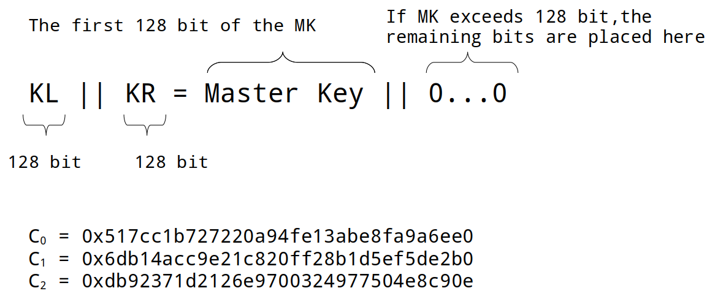
| Key size | CK0 | CK1 | CK2 |
|---|---|---|---|
| 128 | C0 | C1 | C2 |
| 192 | C1 | C2 | C0 |
| 256 | C2 | C0 | C1 |
Once obtained the result from that function, an XOR is applied with W or KR, depending of the W target. Fo means odd and Fe is even, the difference between them is in the order that the SBOX is applied. For odd it starts with SBOX1 and then SBOX2, for even is SBOX2 and then SBOX1.
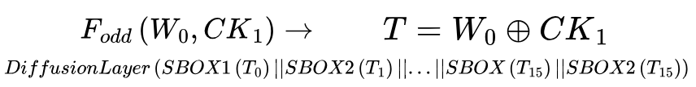
After getting the four Ws, we are ready for obtaining the encryption sub keys for each round, it is about shifting and XORing. For the decryption sub keys, the processes is reversed with the diffusion layer.
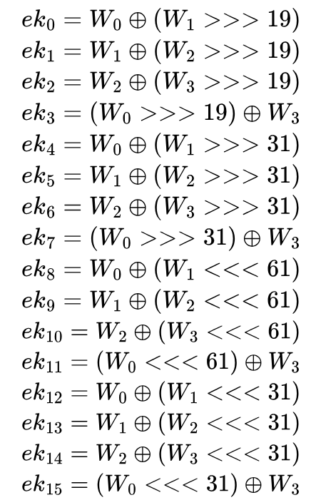
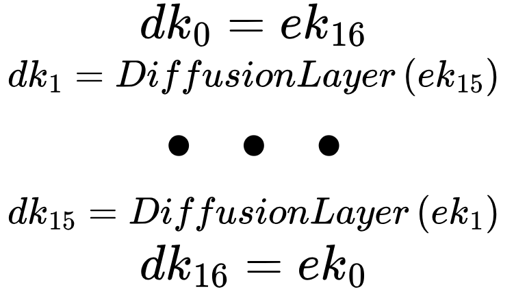
The system is ready to perfom encryption or decryption when the sub keys were obtained. It is a very repetitive process, it starts by XORing plaintext and encryption key, after applying substitution type 1 (made of a fixed order of SBOX tables substitution) and diffusion layer, the only thing is that in the next time the substitution will use substitution type 2 (similar to one, but again, the order of the tables change), and the next round again type 1. The diffusion layer is a set of equations composed of XORs which are applied the 16 bytes in the order showed in the next picture.
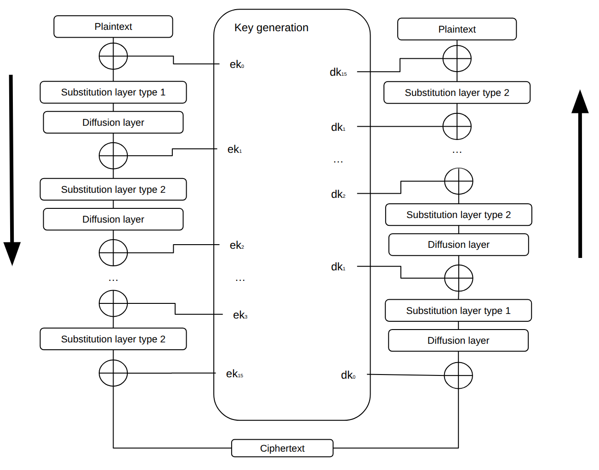
The next picture illustrates the global architecture of the implementation. It is made of a wrapper named crypto.vhd which is connected to the axi_slave_interface.vhd, and connects that interface with aria.vhd. Inside ARIA crypto engine system, the algoritm logic is connected to sub_key_generation.vhd.
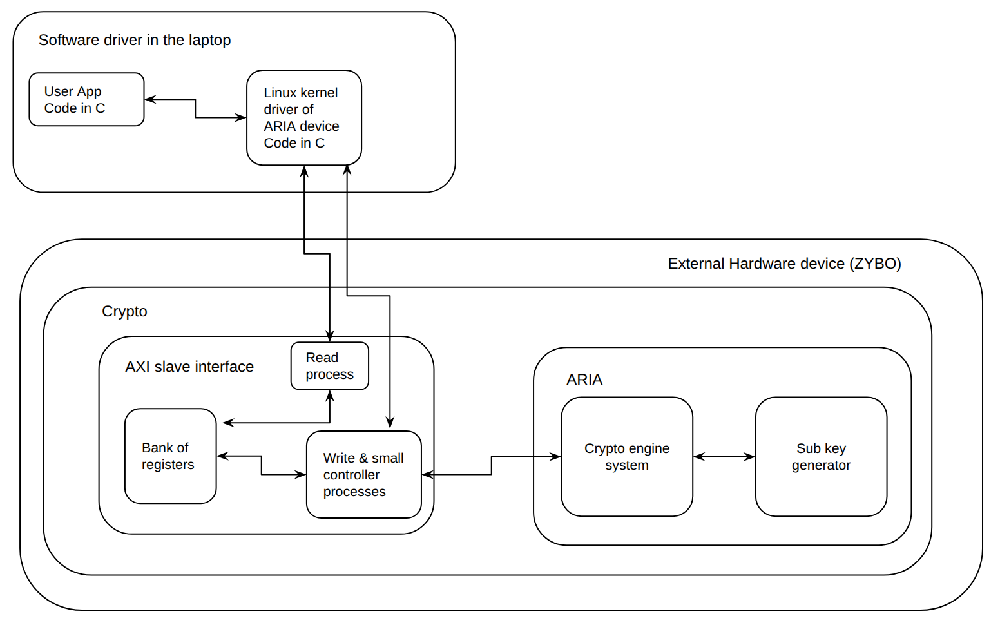
Source file overview.
| File | Role in the project |
|---|---|
| crypto.vhd | The wrapper of the accelerator. It makes the physical interconnections among axi_slave_interface.vhd, aria.vhd and itself. Its ports will communicate to the exterior of the FPGA. |
| axi_slave_interface.vhd | It has the logic to receive and send data to the exterior, but also a bank of registers to configure the crypto engine and a small FSM to move data to aria.vhd. |
| aria.vhd | Crypto engine that will encrypt or decrypt the plaintext or ciphertext, respectively. |
| sub_key_generation.vhd | It has the FSM to generate all the required subkeys to be utilized by aria.vhd. |
| aria_pkg.vhd | Package containing ARIA-related types, constants, S-box tables and shared definitions |
Something that it is very evident is that the same functions are used in both generation of sub keys and encryption and decryption blocks, so it is more convinent to create a package. My package it is named aria_pkg.vhd. It contains the required constant values like SBOX tables and their inverses, the matrix for difussion layer, customized data types and functions which are described in the next table. A fact about the system is that regardless of the key size, the input and output size will remain the same (128 bit). So the functions most of the time use iteration loops to perform the operations at byte granularity.
Changes from the Original Goal.
There is no AXI Master Inteface working. Its hardware is inside the design of axi_slave_interface.vhd. However, it does not work, the system hangs when the hardware test is applied. In order to avoid blocking our progress, the slave interface was only used. At first the crypto engine was supposed to work with key sizes of 128, 192, and 256 bit. In fact, the register that stores the secret key is 256 bit long and the logic for selecting its size is in implemented in the hardware (aria.vhd, sub_key_generation.vhd & aria_pkg.vhd). However, it only operates 128 bit.
It contains the primitive and combined functions to simplify the coding of the rest of the modules to build the ARIA crypto system.
Substitution layer.
The ARIA substitution layer is implemented through the S-box lookup tables and helper functions. The design is purely combinational and does not contain registers or a clocked process.The 128-bit state is treated as sixteen 8-bit bytes, they were defined as customized arrays of w8_array_t whose each element can have a value from 0 to 255. The names of the constant lookup tables (also known as ROMs) describe themselves the type of SBOX table. Their hexadecimal values were copied directly from the specification document.
For Type 1 substitution, the repeated byte pattern is: S1, S2, S1^-1, S2^-1
For Type 2 substitution, the repeated byte pattern is:S1^-1, S2^-1, S1, S2
All of the SBOX functions sbox1_function(byte), sbox2_function(byte), sbox1_inverse_function(byte) and sbox2_inverse_function(byte) each takes an 8-bit input, convert it to an integer (using to_integer(unsigned(byte))) and return the corresponding entry from the matching table in w8_t.
Diffusion layer.
The ARIA diffusion layer is implemented by the diffusion_layer function. he function splits the 128-bit input into sixteen bytes and computes each output byte as the XOR of selected input bytes according to the diffusion matrix a_c.
In the implementation, the gen_split generate statement maps the 128-bit input vector into a 16-byte internal array. A combinational process then iterates over the diffusion matrix: for each output byte, it XORs all input bytes whose corresponding matrix coefficient is equal to '1'. Finally, the gen_join generate statement concatenates the sixteen output bytes back into the 128-bit state_out vector.
The diffusion matrix is 16×16 where each element is '0' or '1'. It encodes the ARIA diffusion layer A. The matrix is involutional, which means A(A(x)) = x. Because of this property, the same matrix can be used in both encryption and decryption. When the element at position (row, col) is '1', it means that input byte number col is XORed into output byte number row of the diffusion result. It was opted to XOR because in this way it is possible to keep simpler the function.
Expansion function.
expansion_function is made of SBOX & diffusion layer functions and is useful to calculate W1, W2, & W3. This expansion function represents the F(W,CK) of W1 = Fo(W0, CK1) XOR KR, W2 = Fe(W0, CK2) XOR KR. Where Fo stands for F odd and Fe for F even, the difference of those is simply the pattern of SBOX functions. When it is even, the first four bytes follow the partten of SBox1 inverse, SBox2 inverse, SBox1, & SBox2 byte by byte. When it is odd, then it starts with the forward SBox functions. Once the block is completly substituted, we can then apply diffusion function. So the sub_key_generation.vhd can apply XOR KR and calculate W. This expansion_function is capable of performing both functions because the SBOX patterns wer hardcoded based on whether it is ever or odd and the 128 bit data block was treated per byte by slicing and through iteration.
Round key generator.
It performs circular shifts to the right and to the left the right side of the block of data. The number of positions to shift depends on the value of number_shift. This was implemented as the last part to generate the round keys. There is no much to say, it was a very simple function.
Round constants C0, C1, C2.
They are obtained directly from the ARIA specifications. Note that the specification calls them C1, C2, C3 (1-indexed), but in the customized VHDL package the constants were renamed to C0, C1, C2 (0-indexed) to fit the VHDL array convention. The values are exactly the same, only the indices are shifted by one. During key expansion, the three constants are selected and reordered according to the key length.
Round parameters table.
This is a constant array of 17 entries (indices 0 to 16). Each entry contains the four fields described above and is used by round_key_generation to compute one encryption round key. The 17 entries cover the 17 round encryption keys (ek_1 to ek_17).
For example, the first three entries are:
- index 0: (w_left=0, dir='1', w_right=1, shift=19) → W(0) XOR rotate_right(W(1), 19)
- index 1: (w_left=1, dir='1', w_right=2, shift=19) → W(1) XOR rotate_right(W(2), 19)
- index 2: (w_left=2, dir='1', w_right=3, shift=19) → W(2) XOR rotate_right(W(3), 19)
The first 8 entries use right rotation (dir='1') with shift amounts 19 and 31, the next 8 entries use left rotation (dir='0') with shifts 61 and 31, and the last entry uses left rotation with shift 19. This matches the structure of the ek_i formulas in the ARIA spec, where the rotation symbol changes from >>> to <<< at ek_9.
Customized data types in the package.
The package defines the following subtypes and types:
- w1_t: alias for std_ulogic. It is for one-bit selectors, for example to choose between odd and even round in the expansion function.
- w2_t: 2-bit vector. It is to select the key length: "00" means 128-bit key, "01" means 192-bit, "10" means 256-bit. It is also used to select between encryption and decryption keys at the output of the key generator.
- w8_t: 8-bit vector. This is the size of one byte. The S-boxes take a w8_t as input and return a w8_t as output.
- w96_t: 96-bit vector. This corresponds to the 96-bit Initialization Vector (IV) used by GCM, as required by the project specification.
- w128_t: 128-bit vector. This is the main data size in ARIA. One data block is 128 bits, one round key is 128 bits.
- w256_t: 256-bit vector. The master key input uses this because ARIA supports key sizes up to 256 bits. For shorter keys, the unused bits are filled with zero.
- w8_array_t: an unconstrained array of w8_t. It is for the S-box lookup tables (256 entries) and for splitting a 128-bit block into 16 bytes inside the diffusion layer. It was declared like: type w8_array_t is array(natural range <>) of w8_t where the empty inside range <> gives the flexibility to define the element's range later.
- std_ulogic_matrix_t: an unconstrained two-dimensional array of std_ulogic. It is to declare the diffusion matrix a_c.
- w128_array4_t: array of 4 elements of type w128_t. It is to store the four intermediate values W(0), W(1), W(2), W(3) that are computed during key expansion.
- w128_array3_t: array of 3 elements of type w128_t. It holds the three CK constants after they are selected according to the key length.
- w128_array17_t: array of 17 elements of type w128_t. This stores all the round keys. The maximum is 17 because a 256-bit key needs 17 round keys (one extra key after the last round, as explained in the ARIA spec section 2.2).
-
round_generation_parameters_t: a record type with four fields, in the order they appear in the file:
- w_left_index (integer 0 to 3): which W register to use directly on the left side of the XOR.
- shift_direction (std_ulogic): direction of the rotation. '1' means right rotation, '0' means left rotation.
- w_right_index (integer 0 to 3): which W register to rotate.
- shift_number (integer 0 to 62): how many bit positions to rotate.
- round_parameters_t: an array of 17 elements of round_generation_parameters_t. It is used as a parameter table for generating all round keys.
This file implements the ARIA key expansion. It takes the master key as a 256-bit input and produces all the round keys needed by the cipher. It supports the three key sizes (128, 192 and 256 bits), and it can output either the encryption keys (EK) or the decryption keys (DK), depending on a select signal. The whole computation is driven by a single finite state machine.
At first, based on the input of key_len_sel, it defines the maximum number of rounds and the order of C0,C1,C2. They were implemented outside the process. Once inside the process, there is an asynchronous reset to clear signals and set the machine in a known state. At every rising edge the system generates both encryption and decryption keys as long as, it receives the start signal from the aria.vhd. At the end, aria.vhd can received the set of encryption keys or decryption keys at time.
There are some multiplexers to select the CK order and the maximum number of rounds based on the selected key size (key_len_sel). There is one more multiplexer to choose either the subkeys for encryption (EK) or decryption (DK) with sel_set_keys.
The next image illustrates the flow of subkey generation's FSM:
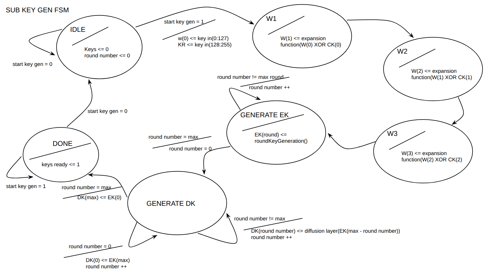
- IDLE: Clears keys_ready and round_number. Stays here until start_key_generation is asserted. On start, copies the upper 128 bits of key_in into W(0) and the lower 128 bits into KR.
- W1: computes W(1) = expansion_function(W(0) xor CK(0), '1') xor KR. The '1' argument means "odd" round, which selects the Type 1 substitution pattern. This corresponds to the spec formula W_1 = F_o(W_0, CK_1) ⊕ K_R (page 9).
- W2: computes W(2) = expansion_function(W(1) xor CK(1), '0') xor W(0). The '0' argument means "even" round, which selects the Type 2 substitution pattern. Matches spec W_2 = F_e(W_1, CK_2) ⊕ W_0.
- W3: computes W(3) = expansion_function(W(2) xor CK(2), '1') xor W(1). Matches spec W_3 = F_o(W_2, CK_3) ⊕ W_1.
- GENERATE_EK: Each cycle, picks one entry from ROUND_PARAMETERS(round_number) and calls round_key_generation with the indicated W values, rotation direction and rotation amount. The result is stored in EK(round_number). The counter increments until it reaches maximum_round (12, 14 or 16). Note that index 0 in the table corresponds to ek_1 in the spec (one-position offset).
-
GENERATE_DK: Derives the decryption round keys from EK following the rule given on page 10 of the spec:
- DK(0) = EK(maximum_round) (first decryption key = last encryption key)
- DK(maximum_round) = EK(0) (last decryption key = first encryption key)
- For all other indices, DK(i) = diffusion_layer(EK(maximum_round - i)) (reversed order, then diffusion layer applied to all middle keys)
- DONE: Asserts keys_ready. The output sub_keys_out is driven from EK if sel_set_keys = "01", and from DK if sel_set_keys = "10". The FSM stays in this state until the next reset.
Sub key generator inputs and outputs
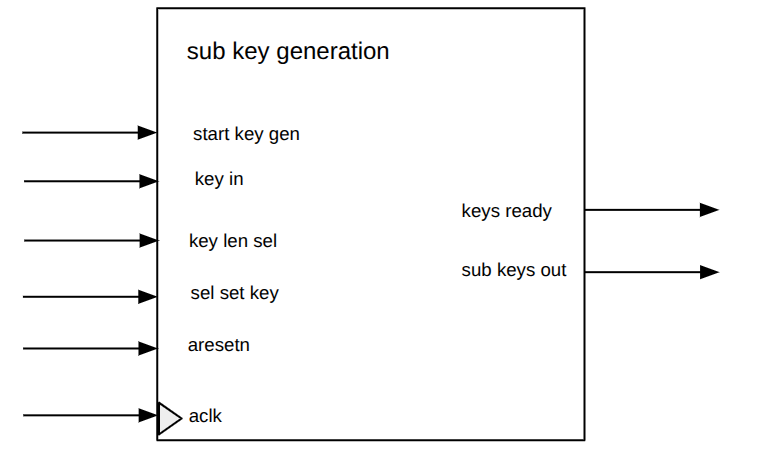
| Signal name | Direction | Type | Description |
|---|---|---|---|
aclk |
in | std_ulogic |
System clock. |
start_key_generation |
in | std_ulogic |
Starts the subkey generation process. |
aresetn |
in | std_ulogic |
Active-low reset signal. |
key_in |
in | w256_t |
Main key input. Supports up to 256-bit keys. |
key_len_sel |
in | w2_t |
Selects the key length: 00 for 128-bit, 01 for 192-bit, 10 for 256-bit. |
sel_set_keys |
in | w2_t |
Selects which set of keys should be generated or output, depending on the selected operation mode/design configuration. |
keys_ready |
out | std_ulogic |
Asserted high when the subkey generation process is complete. |
sub_keys_out |
out | w128_array17_t |
Outputs the generated 128-bit round subkeys. The array supports up to 17 subkeys, required for ARIA-256. |
Internal Signals of the sub_key_generation Module
The sub_key_generation architecture implements the ARIA key expansion process. It uses an internal FSM to generate the intermediate W values, then produces the encryption round keys and the corresponding decryption round keys.
| Signal name | Direction | Type | Description |
|---|---|---|---|
aclk |
in | std_ulogic |
System clock. |
start_key_generation |
in | std_ulogic |
Starts the subkey generation process. |
aresetn |
in | std_ulogic |
Active-low reset signal. |
key_in |
in | w256_t |
Main key input. Supports up to 256-bit keys. |
key_len_sel |
in | w2_t |
Selects the key length: 00 for 128-bit, 01 for 192-bit, 10 for 256-bit. |
sel_set_keys |
in | w2_t |
Selects which set of keys should be generated or output, depending on the selected operation mode/design configuration. |
keys_ready |
out | std_ulogic |
Asserted high when the subkey generation process is complete. |
sub_keys_out |
out | w128_array17_t |
Outputs the generated 128-bit round subkeys. The array supports up to 17 subkeys, required for ARIA-256. |
The module receives the input data block (128 bits), the master key, the selected key size, and the encryption/decryption mode. Based on these inputs, it controls the subkey generation unit and then applies the ARIA round operations to the 128-bit internal state. Therefore, the design combines both control logic, through its finite state machine, and datapath sequencing, through the repeated application of the substitution, diffusion, and round-key addition operations. Once all required rounds have been completed, the module outputs the final encrypted or decrypted block and raises the ready flag.
The enc_dec_sel input selects whether the ARIA core performs encryption or decryption. In this implementation, the main round datapath remains the same, while the selected set of round keys changes. The internal signal sel_set_keys_int tells the subkey generation module whether encryption keys or decryption keys should be prepared. This follows the ARIA structure, where decryption can be performed using a transformed and reordered key schedule.
The ARIA datapath follows the standard ARIA round structure. After the subkeys have been generated, the input block is first combined with the initial round key. This is done in the GEN_KEYS state, where the 128-bit input block plain_cipher_in is XORed with sub_keys(0) and stored in the internal block_state register.
During the normal round-processing phase, the FSM repeatedly updates the internal state. In each normal round, the current block_state first passes through the ARIA substitution layer using the expansion_function. The selected substitution type depends on whether the current round is odd or even. After substitution, the result passes through the diffusion_layer, which spreads the byte-level changes across the full 128-bit state. Finally, the current round key is added with an XOR operation using sub_keys(current_round), and the result is stored back into block_state.
The final round is handled separately because ARIA does not apply the diffusion layer in the last round. In the FINAL_ROUND state, the design applies only the substitution layer and then performs the final round-key addition. The resulting 128-bit value is stored in block_state, copied to data_out in the DONE state, and the ready signal is asserted to indicate that the output is valid.
The ARIA core was implemented as an iterative design, where one round is processed per clock cycle instead of fully unrolling all ARIA rounds in hardware. This means that the same substitution, diffusion, and key-addition logic is reused for each round, while the current_round register controls which round key is selected and when the FSM should move to the final round.
This design was chosen mainly to reduce hardware resource usage and keep the architecture easier to understand, test, and integrate with the rest of the crypto accelerator. A fully unrolled ARIA implementation could process a full block with lower latency, but it would require duplicating the round logic many times, especially for 12, 14, or 16 rounds depending on the key size. That would significantly increase the amount of combinational logic and make timing closure more difficult.
The iterative approach is therefore a practical tradeoff between performance and simplicity. It does not aim to maximize throughput at the ARIA-core level, but it provides a compact and modular implementation that can be controlled cleanly by the FSM. This was especially useful for integration with the key generation unit and the higher-level crypto controller, where correctness, validation, and clear scheduling were prioritized over aggressive pipelining or full unrolling.
In the implementation, this choice is visible in the ROUND_PROCESSING state, where the same datapath functions are applied repeatedly while current_round is incremented and used to select sub_keys(current_round).
The main combinational parts of the ARIA core are the expansion_function, the diffusion_layer, the XOR operations used for key addition, and the simple selection logic that generates sel_set_keys_int from enc_dec_sel. These blocks do not store state by themselves. They compute intermediate values from the current block_state, the selected round key and the current round type. The results are then stored back into registers on the next rising clock edge by the FSM.
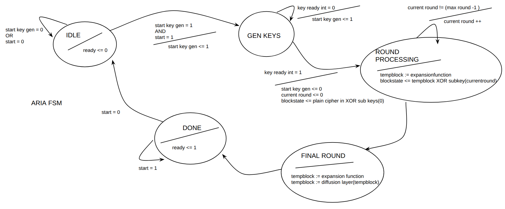
The control FSM sequences the operation of the ARIA core. In the IDLE state, the module waits for the start signal and selects the required number of rounds according to the key size. In GEN_KEYS, it waits until the subkey generation module asserts keys_ready. Once the keys are available, the input block is XORed with the first subkey and stored in block_state. The ROUND_PROCESSING state then iteratively applies the ARIA substitution layer, diffusion layer, and round-key addition. When the last normal round has been reached, the FSM moves to FINAL_ROUND, where the substitution layer and final key addition are performed without the diffusion layer. Finally, in the DONE state, the result is copied to data_out and ready is asserted.
| State | Purpose | Transition condition |
|---|---|---|
| IDLE | Waits for start, clears ready, resets the round counter, and selects the number of rounds according to key_len_sel. | Goes to GEN_KEYS when start = '1'. |
| GEN_KEYS | Starts/waits for subkey generation. Once keys are ready, performs the initial key addition. | Goes to ROUND_PROCESSING when keys_ready = '1'. |
| ROUND_PROCESSING | Applies the normal ARIA rounds: substitution, diffusion, and round-key addition. | Goes to FINAL_ROUND when current_round = maximum_round - 1. |
| FINAL_ROUND | Applies the final substitution and final key addition, without diffusion. | Goes to DONE after the final state update. |
| DONE | Copies the final block to data_out and asserts ready. | Returns to IDLE when start = '0'. |
The FSM coordinates the start of the key generation unit, waits for the generated subkeys, iterates through the normal ARIA rounds, handles the final round separately, and finally asserts the ready signal when the output block is valid.
Internal Registers and Signals
The ARIA core is controlled by a small finite state machine and a set of internal registers. These registers store the current control state, the round index, the selected number of rounds, and the intermediate 128-bit cipher state. Separating the control registers from the combinational datapath functions makes the design easier to understand, simulate, and integrate with the higher-level crypto controller.
| Signal/Type name | Type | Description |
|---|---|---|
| state_t | IDLE, GEN_KEYS, ROUND_PROCESSING, FINAL_ROUND, DONE | Enumerated type defining the states of the ARIA control FSM. |
| state | state_t | Stores the current state of the ARIA FSM. It is initialized to IDLE. |
| current_round | integer range 0 to 16 | Counts the current ARIA round being executed. The upper limit supports the maximum number of rounds required for ARIA-256. |
| maximum_round | integer range 12 to 16 | Stores the number of rounds required for the selected key length: 12 for 128-bit keys, 14 for 192-bit keys, and 16 for 256-bit keys. |
| block_state | w128_t | Internal 128-bit datapath register holding the current state of the block during ARIA round processing. |
| start_key_generation | std_ulogic | Internal control signal used to start the subkey generation unit. |
| keys_ready_int | std_ulogic | Internal status signal indicating that the subkey generation unit has finished generating the required round keys. |
| sub_keys | w128_array17_t | Internal array containing the generated 128-bit ARIA round subkeys. It supports up to 17 subkeys, which are required for ARIA-256. |
| sel_set_keys | w2_t | Internal selection signal used to choose the appropriate set of generated subkeys, depending on the selected operation mode and key configuration. |
It supports the three key sizes defined by the ARIA specification: 128, 192 and 256 bits. The key_len_sel input selects the active key size. According to this selection, the FSM sets maximum_round to 12, 14 or 16 rounds respectively.
ARIA input and output
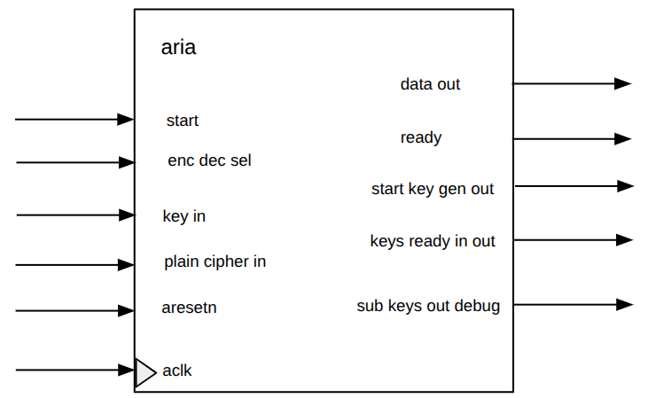
| Signal name | Direction | Type | Description |
|---|---|---|---|
| aclk | in | std_ulogic | System clock. |
| aresetn | in | std_ulogic | Active-low reset signal. |
| start | in | std_ulogic | Starts the ARIA operation. |
| enc_dec_sel | in | std_ulogic | Selects the operation mode: 0 for encryption, 1 for decryption. |
| key_len_sel | in | w2_t | Selects the key length: 00 for 128-bit, 01 for 192-bit, 10 for 256-bit. |
| key_in | in | w256_t | Main key input. Supports up to 256-bit keys. |
| plain_cipher_in | in | w128_t | Input data block. It can be plaintext for encryption or ciphertext for decryption. |
| data_out | out | w2_t | Output data block. It can be ciphertext for encryption or plaintext for decryption. |
| ready | out | std_ulogic | Asserted high when the output block is ready. |
| start_key_generation_out | out | std_ulogic | Debug/control output indicating the start of the key generation process. |
| keys_ready_int_out | out | std_ulogic | Debug/status output indicating that the internal subkeys are ready. |
| sub_keys_out_debug | out | w128_array17_t | Debug output exposing the generated round subkeys. |
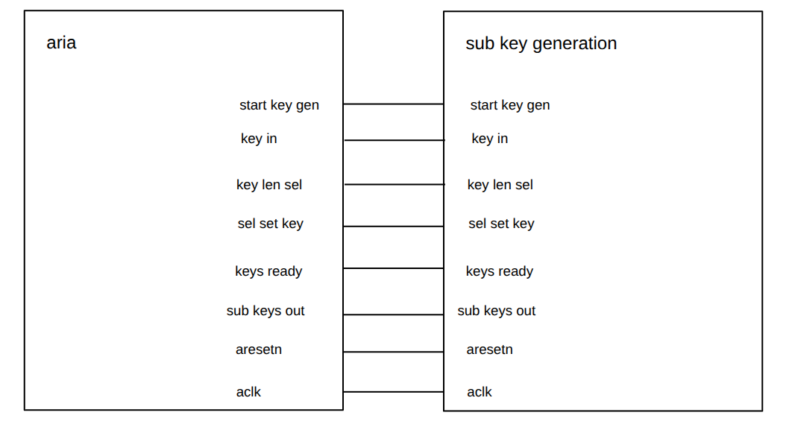
This picture illustrates how the connections are done between aria crypto engine and the sub key generation modules.
The next screenshoots show the output of the previous described hardware. GHDL was utilized for simulating the behavior.
Sub key generation.
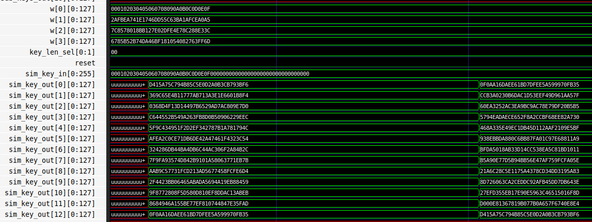
Even though it is possible to select the key's size through key_len_sel, this design only supports the 128 bit one. The example shown in the ARIA specification was utilized to compared against my results, and it is visible that both encryption and decryption sub keys were calculated correctly.
ARIA crypto system.
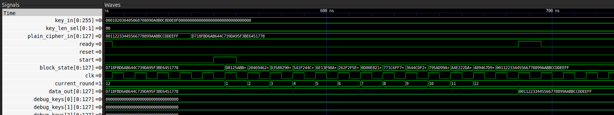
Same for this simulation, in the ARIA specification there is an example for 128-bit and that was considered as reference. It correctly encrypts and decrypts as the message is recovered.
Remember that this course was not only about hardware, but also developing its software. For this, it is relevant to know about the hardware to be used and their features.
The hardware utilized was the ZYBO rev 3 which the Z-7010 Xilinx Zynq is embedded. This programmable system-on-chip integrates an ARM cortex-A9 processor with an FPGA Xilinx 7-series. It has its own DMA, and this is very important because my design has to trigger some interrupts to the processor to activate DMA. Then, no DMA was implemented in my code, only an AXI interface "axi_slave_interface.vhd" that handles such interruptions. Another relevant aspect is that the professor set a fixed input and output layout, that is why a wrapper named "crypto.vhd" was created.
The crypto.vhd is the top-level entity of the accelerator whose inputs and outputs are directly wired to axi_slave_interface.vhd with its component u_axi_interface. The ports related to control the process of configuring the crypto engine from the FSM in u_axi_interface are connected to crypto engine aria.vhd whose component is u_aria_engine.
There is no much to explain about this simple unit. It only wires components, no behavioral, nor dataflow, nor calculations. Its role basically is to act as a bridge between axi_slave_interface.vhd and the exterior of the FPGA. Another responsibility is to make the bridge between axi_slave_interface.vhd to aria.vhd. So all the data sent from the end user through the software stack will move through the wires implemented in crypto.vhd, to reach into the registers inside axi_slave_interface.vhd. This AXI module will process the data to then control the aria.vhd. Then, the result will be store back again to AXI module, and read by the end user through the C code.
The type of code is structural as the components are treated like blocks by instantiating them. Clock (aclk) and reset (aresetn) are in every module in our system.
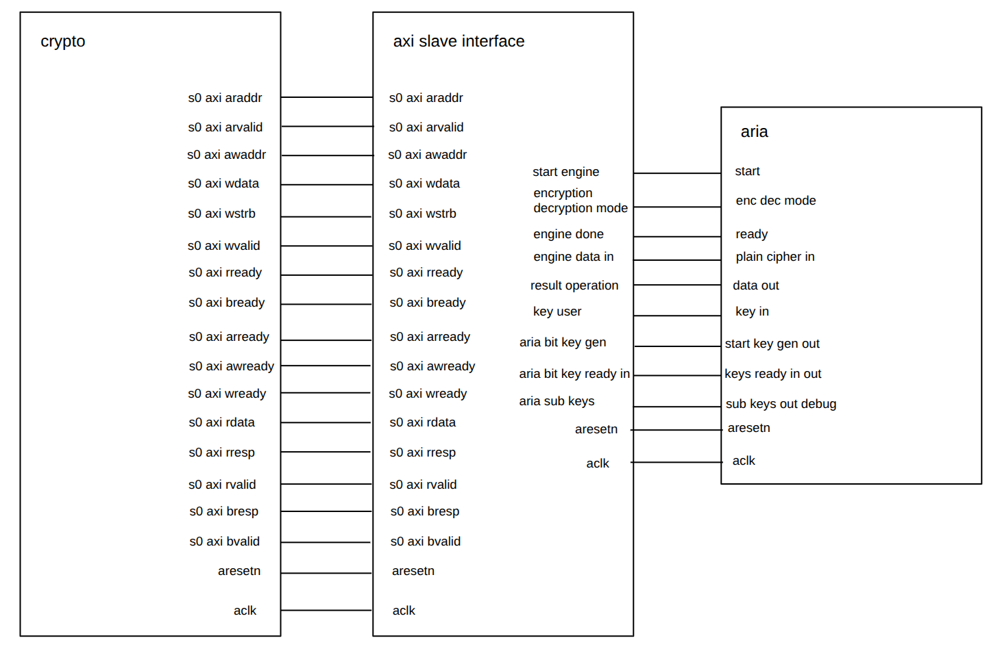
Interconnection crypto.vhd to u_axi_interface
As there is no AXI Master Interface operating in the design, every related interconnection was typed as open for outputs and '0' for inputs. Also as our AXI Slave Interface works appropriatel. Not were enabled any switch, button, and LED on the board as the expectation was to see the results through software when performing the tests. The rest of the ports related to AXI were wired directly to the u_axi_interface instance.
Interconnection u_axi_interface to u_aria_engine
The key size was fixed to 128bit which is represented as a "00". Since ports cannot be connected directly between instances, signals were defined to accomplish this. For example: When aria finishes the crypto operation, it sends a '1' through its output ready to the input engine_done of AXI interface. A signal called engine_ready between them was added.
The AXI register interface is responsible for communication between the computer's processor and the hardware accelerator. Through this interface, the software can write the any register implemented in our bank (like secret key, IV, input and output base addresses, message lengths, and control bits). The software can also read status information whether the crypto engine finished.
It contains three processes, two dedicated for AXI Slave read and write (one process per operation), and another one for the AXI Master containing both operations in a single process (as it was supposed to be a full automata). The process for read operation waits for some signals (described in FSM section) to receive the read request from the end user. Then, it if the address matches with our implemented bank register, the value is taken and send back to the user. For the behavior of AXI slave write process is quite similar to read one as it waits for the write request from the end user. Then it checks from the bank of registers to update a register. In the same process of write operation, the small microcontroller to handle the configuration of the crypto engine was implemented. It had to be in this way as if we tried to modify the same registers in a different process, then errors about it appears when compiling with vivado.
The end user is supposed to provide data only to the next registers: register_secret_key, register_debugging0, register_debugging1, register_debugging2, register_debugging3, and register_control_status. The first one will contain the secret key used as example in the ARIA doc 0x000102030405060708090a0b0c0d0e0f. The debugging registers will contain the plaintext or ciphertext which is 0x00112233445566778899aabbccddeeff or 0xd718fbd6ab644c739da95f3be6451778, respectively. Finally the control & status register is to select encryption (0) or decryption (1) in the bit 1, and then start the crypto engine in bit 0. Once the encryption ends its operation, end user would notice by reading the bit 31 of the control & status register, a one means operation done.
The type of code utilize was hybrid by combining behavioral with data flow.
In the slave side, small controller communicates with aria.vhd by sending the stored data in register_control_status, register_secret_key and from register_debugging0 to register_debugging4. They are wired to aria.vhd, so crypto system can start to operate.
For the master side, een though there is code representing the AXI Master, it is not working correctly. So in the experiments, this interface is not considered.
The most noticeable combinational part is the access to the bank of registers. It was implemented as multiplexer 1:number of registers (for reading) and demultiplexer number of registers:1 (for writing). Currently the system has 35 registers. This access was implemented with the pair case when key words. They decode the address given by the end user is decoded by the multiplexer to access to the right register. There are other few line of codes that are also combinatorial such as the data concatenation from register_debugging(0) to register_debugging(3) to connect to engine_data_in.
In total there are three FSM (excluding AXI Master): One inside the process utilized for read operations, and two inside the wire operation.
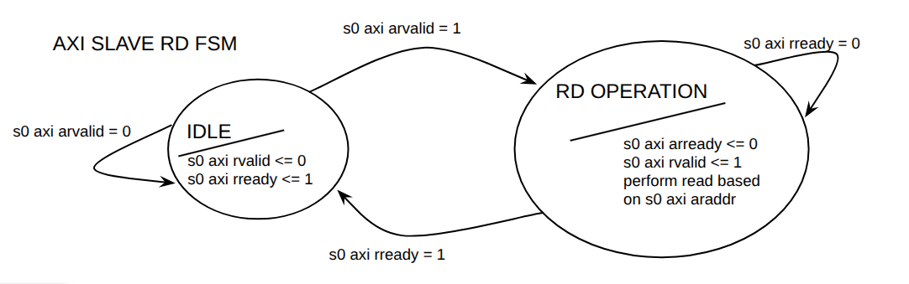
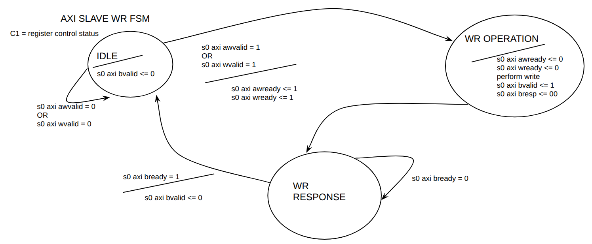
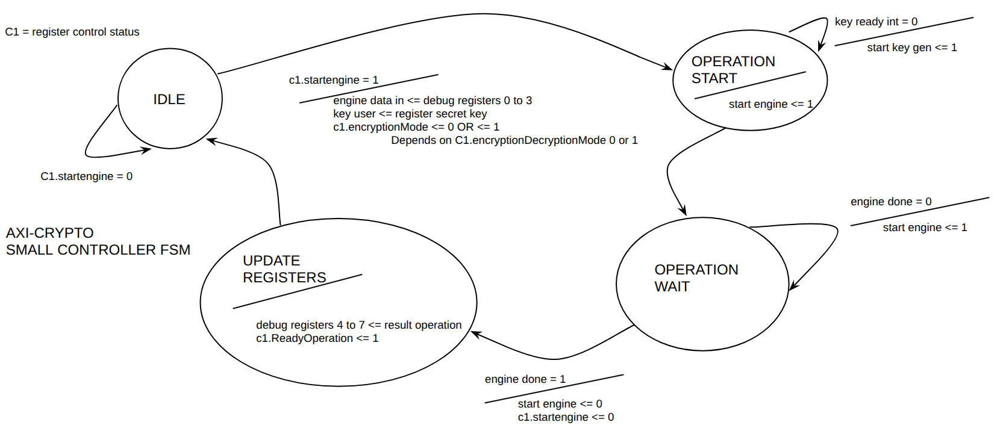
Bank of registers.
The next table describes created bank of registers (NOTICE THAT THERE IS NO 0x4C).
| Offset | Register Name | Description (size in bits) |
|---|---|---|
| 0x00 | register_control_status | Control and Status Register (32-bit, w32_t) |
| 0x04 / 0x08 / 0x0C | register_initialization_vector | Initialization Vector (96-bit, w96_t) |
| 0x10 / 0x14 / 0x18 / 0x1C 0x20 / 0x24 / 0x28 / 0x2C |
register_secret_key | Secret Key (256-bit, w256_t) |
| 0x30 | register_aria_base_address | ARIA Base Address (32-bit, w32_t) |
| 0x34 | register_aria_address_size | ARIA Address Size (32-bit, w32_t) |
| 0x38 | register_plaintext_base_address | Plaintext Base Address (32-bit, w32_t) |
| 0x3C | register_plaintext_address_size | Plaintext Address Size (32-bit, w32_t) |
| 0x40 | register_ciphertext_base_address | Ciphertext Base Address (32-bit, w32_t) |
| 0x44 | register_ciphertext_address_size | Ciphertext Address Size (32-bit, w32_t) |
| 0x48 | register_tag | Tag Register (32-bit, w32_t) |
| 0x50 | register_debugging0 | Debugging Register 0 (32-bit, w32_t) |
| 0x54 | register_debugging1 | Debugging Register 1 (32-bit, w32_t) |
| 0x58 | register_debugging2 | Debugging Register 2 (32-bit, w32_t) |
| 0x5C | register_debugging3 | Debugging Register 3 (32-bit, w32_t) |
| 0x60 | register_debugging4 | Debugging Register 4 (32-bit, w32_t) |
| 0x64 | register_debugging5 | Debugging Register 5 (32-bit, w32_t) |
| 0x68 | register_debugging6 | Debugging Register 6 (32-bit, w32_t) |
| 0x6C | register_debugging7 | Debugging Register 7 (32-bit, w32_t) |
| 0x70 | register_debuggingO 0 | Debugging RegisterO 0 (32-bit, w32_t) |
| 0x74 | register_debuggingO 1 | Debugging RegisterO 1 (32-bit, w32_t) |
| 0x78 | register_debuggingO 2 | Debugging RegisterO 2 (32-bit, w32_t) |
| 0x7C | register_debuggingO 3 | Debugging RegisterO 3 (32-bit, w32_t) |
| 0x80 | register_debuggingO 4 | Debugging RegisterO 4 (32-bit, w32_t) |
| 0x84 | register_debuggingO 5 | Debugging RegisterO 5 (32-bit, w32_t) |
| 0x88 | register_debuggingO 6 | Debugging RegisterO 6 (32-bit, w32_t) |
| 0x8C | register_debuggingO 7 | Debugging RegisterO 7 (32-bit, w32_t) |
Bit field of ctrl register.
| Bits | Name | Type | Reset Value | Description |
|---|---|---|---|---|
| 31 | ReadyOperation | RO | 0 |
Operation Ready Status: 1 : Encryption or decryption completed successfully. 0 : Operation in progress or not started. |
| 30:2 | Reserved | - | 0 | Reserved for future use. Reads as 0. |
| 1 | Mode | RW | 0 |
Operation Mode: 1 : Decrypt mode. 0 : Encrypt mode. |
| 0 | StartEngine | RW | 0 |
Start Crypto Engine: 1 : Start the operation. 0 : No action / Engine idle. |
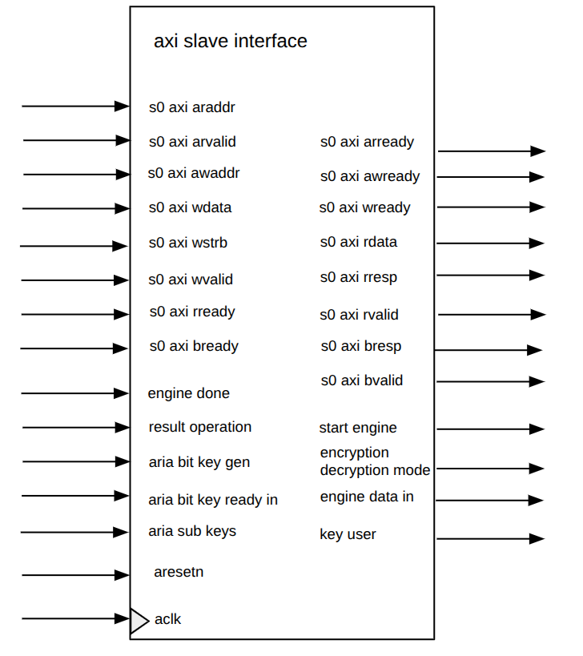
In the image, the ports related to master were not considered.
AXI slave interface input and output.
| Signal name | Direction | Type | Description |
|---|---|---|---|
| aclk | in | std_ulogic | System clock used by the AXI interface and internal control logic. |
| aresetn | in | std_ulogic | Active-low reset signal. |
| s0_axi_araddr | in | std_ulogic_vector(11 downto 0) | Read address from the CPU. The 12-bit address space allows access to the internal register map. |
| s0_axi_arvalid | in | std_ulogic | Indicates that the CPU is presenting a valid read address. |
| s0_axi_arready | out | std_ulogic | Read address handshake signal. Asserted when the interface accepts the read address. |
| s0_axi_awaddr | in | std_ulogic_vector(11 downto 0) | Write address from the CPU. |
| s0_axi_awvalid | in | std_ulogic | Indicates that the CPU is presenting a valid write address. |
| s0_axi_awready | out | std_ulogic | Write address handshake signal. Asserted when the interface accepts the write address. |
| s0_axi_wdata | in | std_ulogic_vector(31 downto 0) | Write data from the CPU. |
| s0_axi_wstrb | in | std_ulogic_vector(3 downto 0) | Write byte-enable signals. Each bit corresponds to one byte of s0_axi_wdata. |
| s0_axi_wvalid | in | std_ulogic | Indicates that the CPU is presenting valid write data. |
| s0_axi_wready | out | std_ulogic | Write data handshake signal. Asserted when the interface accepts the write data. |
| s0_axi_rdata | out | std_ulogic_vector(31 downto 0) | Read data returned to the CPU. |
| s0_axi_rresp | out | std_ulogic_vector(1 downto 0) | Read response signal, used to indicate successful or erroneous read accesses. |
| s0_axi_rvalid | out | std_ulogic | Indicates that valid read data and response are available. |
| s0_axi_rready | in | std_ulogic | Read response handshake signal from the CPU. |
| s0_axi_bresp | out | std_ulogic_vector(1 downto 0) | Write response signal, used to indicate successful or erroneous write accesses. |
| s0_axi_bvalid | out | std_ulogic | Indicates that a valid write response is available. |
| s0_axi_bready | in | std_ulogic | Write response handshake signal from the CPU. |
AXI master interface input and output
| Signal name | Direction | Type | Description |
|---|---|---|---|
| m0_axi_araddr | out | std_ulogic_vector(31 downto 0) | Read address sent to memory. |
| m0_axi_arvalid | out | std_ulogic | Indicates that the accelerator is presenting a valid memory read address. |
| m0_axi_arready | in | std_ulogic | Read address handshake signal from memory. |
| m0_axi_awaddr | out | std_ulogic_vector(31 downto 0) | Write address sent to memory. |
| m0_axi_awvalid | out | std_ulogic | Indicates that the accelerator is presenting a valid memory write address. |
| m0_axi_awready | in | std_ulogic | Write address handshake signal from memory. |
| m0_axi_wdata | out | std_ulogic_vector(31 downto 0) | Write data sent to memory. |
| m0_axi_wstrb | out | std_ulogic_vector(3 downto 0) | Write byte-enable signals for memory writes. |
| m0_axi_wvalid | out | std_ulogic | Indicates that valid write data is being sent to memory. |
| m0_axi_wready | in | std_ulogic | Write data handshake signal from memory. |
| m0_axi_rdata | in | std_ulogic_vector(31 downto 0) | Read data returned from memory. |
| m0_axi_rresp | in | std_ulogic_vector(1 downto 0) | Read response from memory. |
| m0_axi_rvalid | in | std_ulogic | Indicates that valid read data and response are available from memory. |
| m0_axi_rready | out | std_ulogic | Read response handshake signal sent to memory. |
| m0_axi_bresp | in | std_ulogic_vector(1 downto 0) | Write response from memory. |
| m0_axi_bvalid | in | std_ulogic | Indicates that a valid memory write response is available. |
| m0_axi_bready | out | std_ulogic | Write response handshake signal sent to memory. |
AXI small controller input and output.
| Signal name | Direction | Type | Description |
|---|---|---|---|
| start_engine | out | std_ulogic | Starts the internal crypto engine after the required configuration registers have been written. |
| encryption_decryption_mode | out | std_ulogic | Selects the operation mode of the crypto engine: encryption or decryption. |
| engine_done | in | std_ulogic | Indicates that the crypto engine has completed its current operation. |
| engine_data_in | out | w128_t | 128-bit input block sent from the AXI/register logic to the crypto engine. |
| result_operation | in | w128_t | 128-bit result block returned by the crypto engine. |
| key_user | out | w128_t | User key provided to the crypto engine. In this interface version, this signal carries a 128-bit key value. |
| aria_bit_key_gen | in | std_ulogic | Status signal from the ARIA key generation logic. |
| aria_bit_key_ready_int | in | std_ulogic | Indicates that the ARIA internal round keys are ready. |
| aria_sub_keys | in | w128_array17_t | Generated ARIA round subkeys provided by the key generation unit. |
FSM State Signals.
| Signal / Type name | Type | Description |
|---|---|---|
| state_axi_s0_rd_t | (IDLE, RD_OPERATION) | Enumerated type defining the states of the AXI slave read FSM. |
| state_axi_slave_rd | state_axi_s0_rd_t | Current state of the AXI slave read FSM. It controls CPU read accesses to the internal registers. |
| state_axi_s0_wr_t | (IDLE, WR_OPERATION, WR_RESPONSE) | Enumerated type defining the states of the AXI slave write FSM. |
| state_axi_slave_wr | state_axi_s0_wr_t | Current state of the AXI slave write FSM. It controls CPU write accesses to the internal registers and generates the write response. |
| state_axi_crypto_t | (IDLE, OPERATION_START, OPERATION_WAIT, UPDATE_REGISTERS) | Enumerated type defining the FSM that controls the interaction between the AXI register interface and the crypto engine. |
| state_axi_crypto | state_axi_crypto_t | Current state of the crypto-control FSM. It starts the crypto engine, waits for completion, and updates internal status registers. |
Configuration and Status Registers.
| Signal name | Type | Description |
|---|---|---|
| register_control_status | w32_t | Control and status register used by the CPU to start operations and monitor the accelerator status. |
| register_initialization_vector | w96_t | Stores the 96-bit initialization vector used by the GCM mode. |
| register_secret_key | w256_t | Stores the user-provided secret key. It supports key sizes up to 256 bits. |
| register_aria_base_address | w32_t | Stores the base address related to the ARIA data path or ARIA-specific memory region, depending on the implemented register map. |
| register_aria_address_size | w32_t | Stores the size associated with the ARIA address region or ARIA-specific operation. |
| register_plaintext_base_address | w32_t | Stores the base memory address of the plaintext input buffer. |
| register_plaintext_address_size | w32_t | Stores the size of the plaintext input data in memory. |
| register_ciphertext_base_address | w32_t | Stores the base memory address of the ciphertext/output buffer. |
| register_ciphertext_address_size | w32_t | Stores the size of the ciphertext/output data in memory. |
| register_tag | w32_t | Stores part of the authentication tag or tag-related status information. |
| register_debugging | w32_array8_t | Debug register array used to expose internal values during simulation or hardware testing. |
| register_debugging_0 | w32_array8_t | Additional debug register array used for observing internal states or intermediate values. |
Internal AXI and Control Signals
| Signal name | Type | Description |
|---|---|---|
| internal_register_s0_rd_address | std_ulogic_vector(11 downto 0) | Stores the CPU read address received through the s0_axi slave interface. |
| internal_buffer_text | w32_t | Temporary 32-bit buffer used to store data read from or written to the AXI register interface. |
| internal_register_m0_rd_address | std_ulogic_vector(31 downto 0) | Stores the current memory read address used by the AXI master interface. |
| master_done | std_ulogic | Internal completion flag indicating that the AXI master/DMA operation has finished. |
Crypto Engine Data Buffers
| Signal name | Type | Description |
|---|---|---|
| internal_buffer_result | w128_t | Temporary 128-bit buffer used to store the result returned by the crypto engine before it is written back or exposed through registers. |
| internal_buffer_key | w128_t | Temporary 128-bit key buffer used to provide key material to the crypto engine. |
| write_timeout_ctr | integer range 0 to 255 | Commented-out timeout counter that could have been used to detect or avoid stalled write operations. |
The simulation only consists in write to some specific offsets and then read them, by modifying the AXI slave signals to transition the FSM. In the next picture shows how the values are being stored into the debugging registers.
It was created a custom Linux character device driver named aria_driver.c and an user-space application called aria_code.c to manage the hardware.
Platform Device Driver (aria_driver.c)
The driver uses the Linux Platform Driver framework and registers as a character device (/dev/aria). It handles low-level hardware abstraction and memory management. Its script identifier is .compatible = "xlnx,crypto-1.0", and the driver's initialization is triggered with the probe function aria_probe when the hardware is discovered at run time.
Inside the probe function (which initializes the ZYBO), there is a platform_get_resource to extract the physical address of our hardware. Then that region is clamed with request_mem_region. Finally, ioremap is called to map the addresses of the AXI-Lite registers into the kernel's virtual address space. This allows the driver to configure the hardware using standard iowrite32 and ioread32 calls.
The driver provides a custom ioctl interface to reduce system call overhead. It includes commands to write through the macro IOCTL_WRITE_REG (command ID = 5), and read IOCTL_READ_REG (command ID = 6). IOCTL makes use of the struct aria_reg_data which contains the offset and its value whose sizes cannot exceed 32 bits. The IOCTL also invokes copy_from_user and copy_to_user to send the data into kernel memory and user application respectively. Once there was no error, Kernel is ready to perform iowrite32 or ioread32 through the ZYBO MMIO. Only the read operation has copy_to_user to update the result to ZYBO MMIO.
Once the driver module is loaded (with insmod), the aria_probe function is triggered that creates /dev/aria and maps the memory of ZYBO in the system. So the user application is ready to read and write through IOCTL. When the driver is removed (with rmmod), as good programming habit, the device is unregistered, the memory region is released, maybe only missing action was to zeroing the freed region to prevent from any leak.
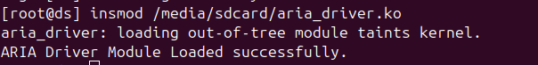
User-Space Test Application (aria_code.c)
The application layer is the final system-level test. It verifies the datapath from user-space software down to the ARIA hardware by interacting with its representation as /dev/aria.
First it was open the device file (/dev/aria), so it is possible to access to the registers of the ZYBO hardware through ioctl function. To keep a better order of the code, the offsets of the address of the registers was keep as macros, the ioctl command for write and read are in specific functions, a struct that involves the offset and its value was created among other aspects. Basically that is what they have in common one another, but each C code has its own purpose and own diagram flow which are simple. After this work, we should be more grateful that despite all the hard work behind to implement a device hardware with its driver, it ends up in a simpler API for the developers of higher layers.
Be aware that there is a whole series of steps to create the boot image of the ZYBO which is composed of First Stage Boot Loader (FSBL) which is named as boot.bin that is executed by the ZYBO's ROM once turned on to wake up hardware, to load the bitstream and to handover to the next stage of boot process. This is Second Stage Boot Loader (Das-U-Boot) where the configuration defines the environment variables which will bridge between ZYBO and OS, so it knows where to find the OS and how to boot it up on the ZYBO. There is much information about this boot process which would require a specific article.
All of them can be execute by you, just follow the instructions given inside aria/testing/steps_To_Test_In_Hardware.md. You are required to copy and paste the commands in that file one by one, it takes around 20 minutes to compile from scratch. But once you compiled the Hardware, compiling the driver or c code takes much much less time (1 minute or less).
read_write_hardware_text.c
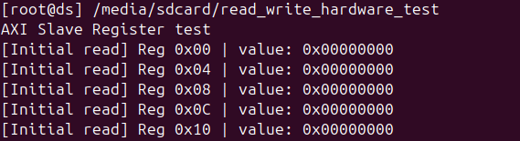
Its main purpose is just to test every internal register implemented in AXI slave interface. From 0x0 to 0x8C (excluding 0x4C). It worked well, the pre-defined values write and read. The log showed an error in the 0x0 and that's normal because we triggered the crypto engine and it cleaned some bits. As the output was very large, a log was created (log here).
aria_code.c
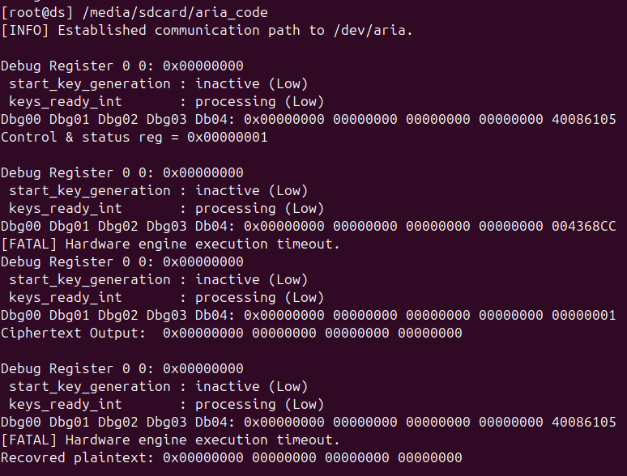
It tries to configure the ARIA engine by providing the most relevant parameters to start encrypting and decrypting. We made use of debug registers to see the result from the crypto engine. The result is showed in aria_code.png. Unfortunately, it could not trigger the crypto engine (as in the results appear only zero).
aria_code_fs.c
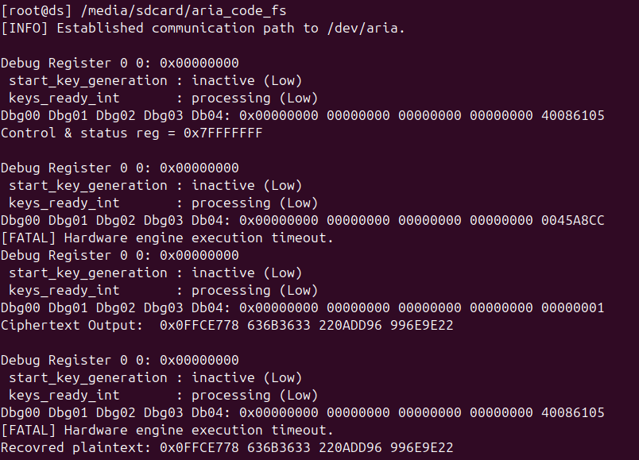
This idea came up in the same day of the deadline: What if we set all the bits of the register of control and status, just to see some output different to zero. It worked! Our implementation to communicate AXI small controller to crypto never was wrong, it only took the most signficant bits of the register. It was a great step as at least the results were not zeroes anymore once triggering the crypto engine, however, there was no time left to debug.
read_write_hardware_test_speed.c
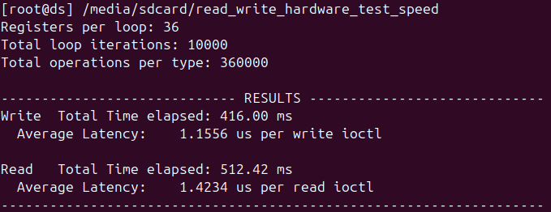
This c code only measures how much time takes to read and write.
read_write_hardware_test_overlap_mirroring.c
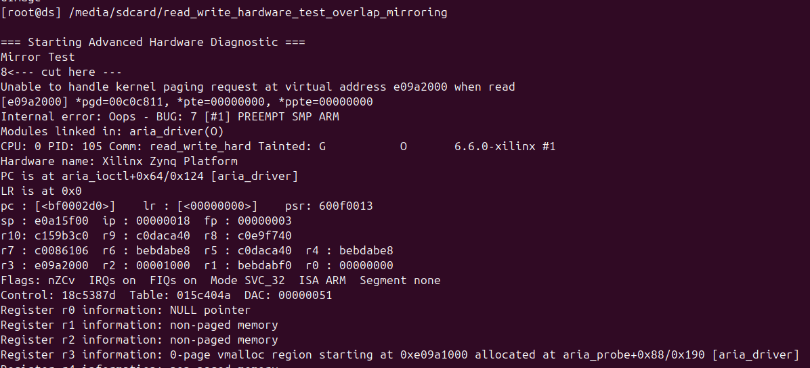
A negative test scenario to see how the system reacts if we try to perform aliasing or overlap between two offsets. Luckly the kernel was able to detect it (log here).
read_write_hardware_test_extra_reg.c
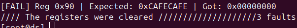
This was an extra test to see the behavior of the system if we try to access to offset 0x90 which was not defined. This is a negative test scenario. It seems that is ignored by the hardware or driver, it always shows 0s (log here).
The final implementation was synthesized on the target FPGA platform. The main synthesis metrics are summarized below: The AXI master interface also was considered.
| Resource Type | Used | Available |
|---|---|---|
| Slices | 3,011 | 4,400 |
| Slice LUTs | 8,081 | 17,600 |
| Slice Registers | 7,102 | 35,200 |
| Block RAM Tiles | 4 | 60 |
| DSPs | 0 | 80 |
| Instance | Module / Component | LUTs | FFs | Block RAM (RAMB18) |
|---|---|---|---|---|
| crypto_top_wrapper | Top Level Wrapper | 8,081 | 7,102 | 8 |
| crypto_top_i | crypto_top | 8,081 | 7,102 | 8 |
| crypto | crypto_top_crypto_0 | 7,710 | 6,721 | 8 |
| u_aria_engine | aria | 7,163 | 5,159 | 8 |
| u_key_gen | sub_key_generation | 6,992 | 4,880 | 0 |
| u_axi_interface | axi_slave_interface | 540 | 1,562 | 0 |
| ps7_axi_periph | AXI Peripherals Interconnect | 331 | 356 | 0 |